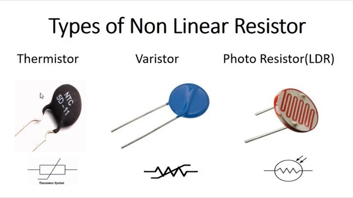

Understanding Basic Circuit Components
Resistors
Resistors are essential components in almost every electronic device, acting like tiny "traffic controllers" for electric current. Their main role is to limit or regulate the flow of electricity in a circuit, ensuring that other components, like LEDs or microchips, receive just the right amount of power to work safely. Imagine a garden hose: if you squeeze it, less water flows through. Resistors work similarly, "squeezing" the flow of electrons to protect sensitive parts from damage.
Resistors operate based on Ohm’s Law, which states that Voltage = Current × Resistance (V = I×R). This means the higher the resistance (measured in Ohms), the less current can flow through the circuit. For example, a resistor with high resistance might slow down current to protect a fragile LED, while a low-resistance resistor could allow more power to reach a motor.
There are 2 main types of resistors: Linear and Nonlinear resistors
Linear Resistors
Linear resistors are the most common type of resistors. They follow Ohm’s Law perfectly, meaning their resistance stays constant regardless of changes in voltage or current flowing through them. Think of them like a steady, reliable friend they behave predictably in almost any situation.
Examples of Linear Resistor :
Fixed linear resistors are the most common type of resistor, Example include carbon film resistors, which are affordable and widely used in household electronics like TVs and radios, and metal film resistors, known for their accuracy in medical devices and audio equipment. Wirewound resistors, made by coiling high-resistance wire around a core, handle large power loads in industrial machinery or electric heaters. Modern electronics, such as smartphones and laptops, rely on tiny surface-mount resistors (SMDs) to save space while maintaining performance. Fixed resistors act as the "steady hands" of a circuit, ensuring components like LEDs or sensors receive consistent current without risk of overload.
Variable linear resistors allow users to manually adjust resistance within a specific range while still obeying Ohm’s Law. They offer flexibility in tuning circuits without replacing components. The two main types are potentiometers and rheostats.
A potentiometer (or "pot") has three terminals and is often used to control voltage in a circuit. For example, the volume knob on a speaker adjusts resistance to raise or lower sound output. Similarly, dimmer switches for lights use potentiometers to regulate brightness. Rheostats, a two-terminal variant, adjust current flow by varying resistance. Older ceiling fan speed controllers or vintage lamp dimmers often use rheostats to manage motor or light intensity. Both types work like adjustable "valves" for electricity turning a knob or sliding a lever changes the resistor’s effective length, altering resistance in a linear, predictable way.
Non-Linear Resistors
Nonlinear resistors do not obey Ohm’s Law. Instead, their resistance changes based on external factors like temperature, light, or voltage. They’re like chameleons adapting their behavior to suit specific needs.
Examples of Non-Linear Resistor :

Thermistors are temperature-sensitive resistors that change their resistance based on heat. For instance, they’re used in home thermostats to regulate heating or cooling systems by detecting room temperature shifts. In cars, they monitor engine coolant levels to prevent overheating, ensuring your vehicle runs smoothly. They’re also critical in medical devices like digital thermometers, where precise temperature readings are essential.
Light-Dependent Resistors (LDRs), on the other hand, adjust their resistance when exposed to light. Imagine automatic streetlights that flicker on at dusk—these rely on LDRs to sense fading daylight and activate the bulbs. Similarly, night lights in homes use LDRs to brighten automatically in darkness, much like how our pupils dilate to adapt to low light.
Photoresistors, similar to LDRs, fine-tune their resistance based on light intensity. They’re often found in camera light meters, helping photographers adjust exposure settings by measuring ambient light. Solar-powered garden lights also use photoresistors to switch off during the day and illuminate at night, conserving energy efficiently.
Varistors act as voltage-sensitive guardians in electronics. They protect devices like TVs and computers from sudden power surges, such as those caused by lightning strikes. When a voltage spike occurs, a varistor’s resistance drops dramatically, diverting excess electricity away from sensitive components—like a safety valve in a plumbing system.
Calculating Resistor's Value
To identify a resistor’s value, engineers use color-coded bands printed on them.Resistor color codes are a universal "secret language" printed as colored bands on resistors to indicate their resistance value, tolerance, and sometimes reliability. This system was developed to allow engineers and hobbyists to quickly identify a resistor’s specifications without needing printed text, which would be impractical on small components.
Most resistors use 4 bands, though precision resistors may have 5 or 6 bands for additional details like temperature coefficients. Here’s how a standard 4-band resistor works:
First Two Bands (Digits):
These represent the first two digits of the resistance value. For example, red (2) and red (2) in the "red-red-brown-gold" resistor combine to form "22."Third Band (Multiplier):
This determines the order of magnitude. Brown represents ×10, so "22" becomes 22 × 10 = 220 Ohms.Fourth Band (Tolerance):
Indicates how much the actual resistance can deviate from the stated value. Gold (±5%) means the 220Ω resistor could range between 209Ω and 231Ω.Color Code Table:

Tolerance
Tolerance is critical in circuits where precision is key. A ±1% resistor (brown band) is essential in medical devices or audio equipment, while a ±10% resistor (silver band) might suffice for basic tasks like powering an LED strip. High-precision resistors (e.g., gray or blue tolerance bands) are used in aerospace or laboratory instrument
Fun Fact!
The earliest resistors were simple blocks of carbon! Today, they’ve evolved into precision components so small that thousands can fit on a single microchip, powering everything from smartwatches to spacecraft.
Resistance Calculator
Select the color bands of your resistor to calculate its resistance value.